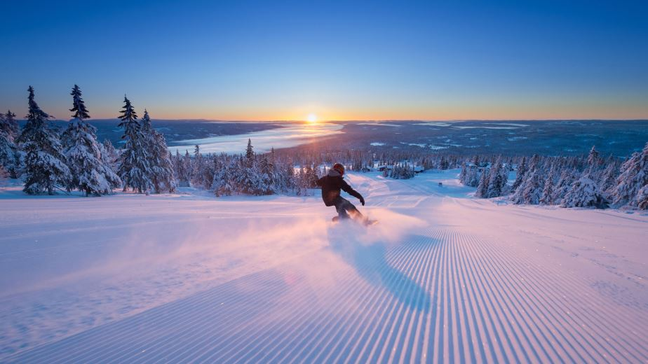

Alpine Skiing in Åre: Green, blue, red, black pistes. Park, forest, off-piste. T-bars, chairlifts, gondolas topped with a cable car. Åre has 42 ski lifts and 89 slopes + 890 meters vertical drop = a lot of skiing in Skandinavia’s largest and best ski resort ✌
If you want to go skiing in northern Europe there is really no reason to go anywhere but Åre. Even if we strive to avoid clichés such as “this is where you’ll find something for everyone”, this is one occasion when we actually do have to use them. Because Åre truly offers something for everyone. From conveyor belts to World Championship approved slopes, to challenging off-piste to gigantic jumps in the parks. You just need to find your favorite spot.
Explore the Ski Area There are 89 pistes in Åre’s ski area which consists out of the centrally located Åre By Ski Area, the Björnen Ski Area and the Duved and Tegefjäll areas (about 10 km west of Åre) which are easily reached by ski bus or car. We have collected some valuable basic information about alpine skiing in Åre here. For updated information about the weather and which lifts are currently operating, visit Skistar.
